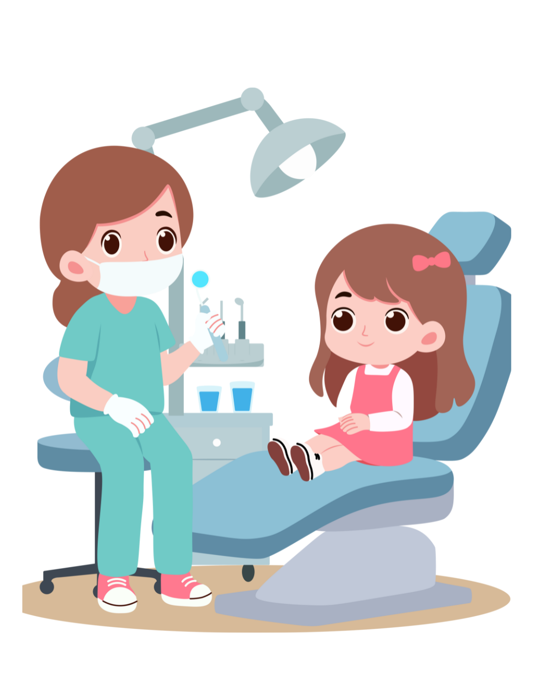
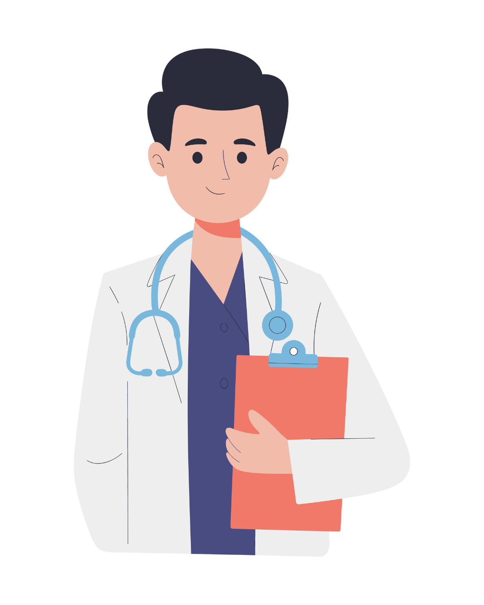
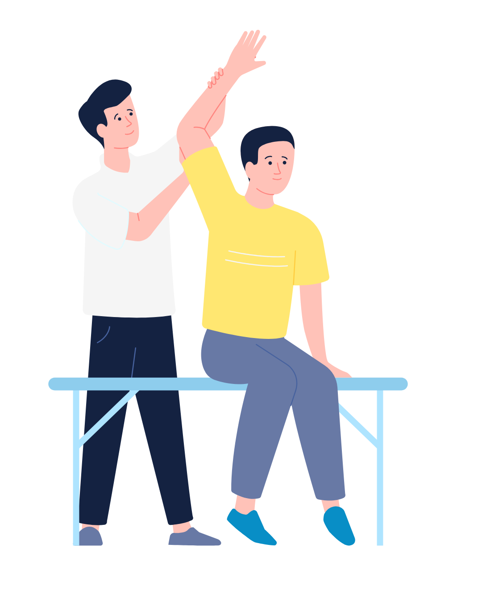
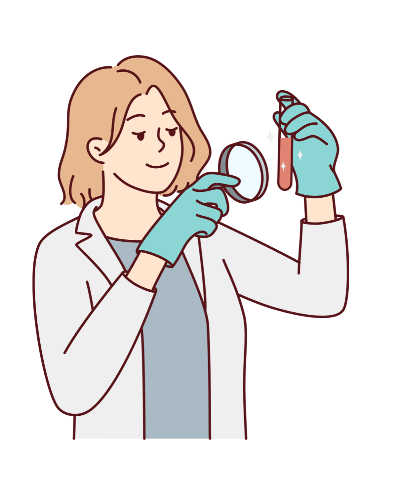

Poli Umum
Poli Umum kami ada dua dokter yaitu dokter Agung dan dokter Yudi. Untuk jam praktet poli umum ada dua shift pagi jam 07.00 - 10.000 Pagi dan 16.00 - 20.00 Sore, jadwal dokter Agung hanya Senin - Jummat, dan Dokter Yudi Kamis & Sabtu.
Poli Gigi
Poli Gigi kami memiliki dokter marlina Untuk jam praktek poli Gigi hanya satu shift pagi jam 08.00 - 12.00 siang jadwal dokter Marlina hanya Senin - Jummat.

Poli IGD
Poli IGD kami memiliki dokter Reny, dokter Widya, Dokter Budi, Dokter Nunung. Untuk jam praktek poli IDG 24 Jam dimulai dari jam 07.00 Pagi - 07.00 Pagi.
Poli Spesialis Penyakit Dalam
Poli Spesialis Penyakit Dalam kami memiliki dokter Arief Setiawan SpPD, Untuk jam praktek poli Spesialis Penyakit Dalam dimulai dari jam 07.00 Pagi - 08.00 Pagi.
Fisioterapi
Tentunya kami juga mempunyai fasilitas Fisioterapi yang siap membantu anda untuk memenuhi masa Pemulihan hingga ada sembuh. Fisioterapi mempunyai jadwal senin dan sabtu dengan jam 07 - 12.000 Pagi dan 16.00 - 20.000 Malam.
Laboratorium
Tentunya kami juga mempunyai fasilitas Laboratorium yang siap membantu anda untuk melayani sepenuh hati dan kami bersedia 24jam untuk Layanan di Klinik kami.